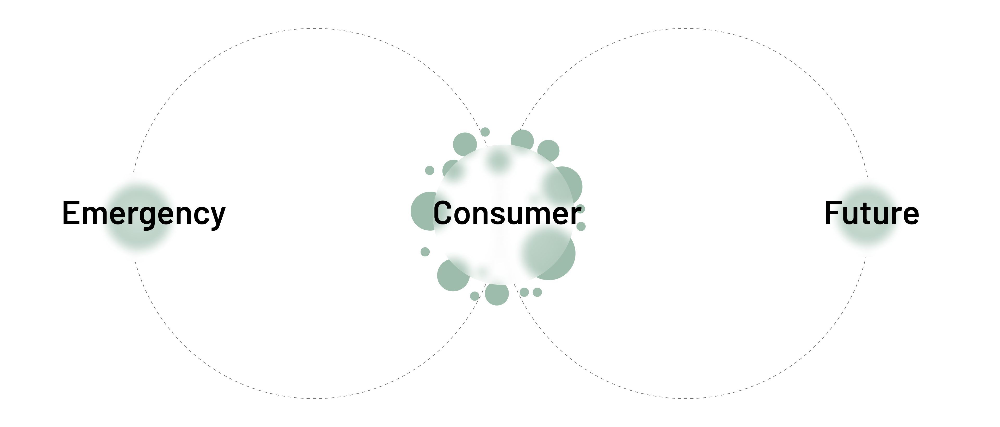
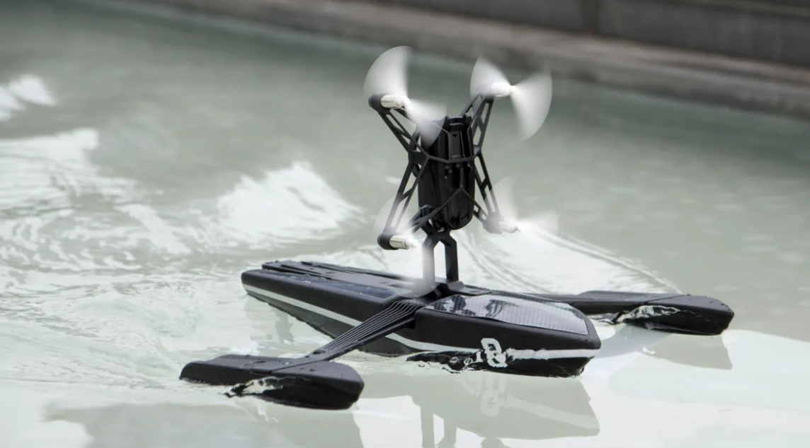
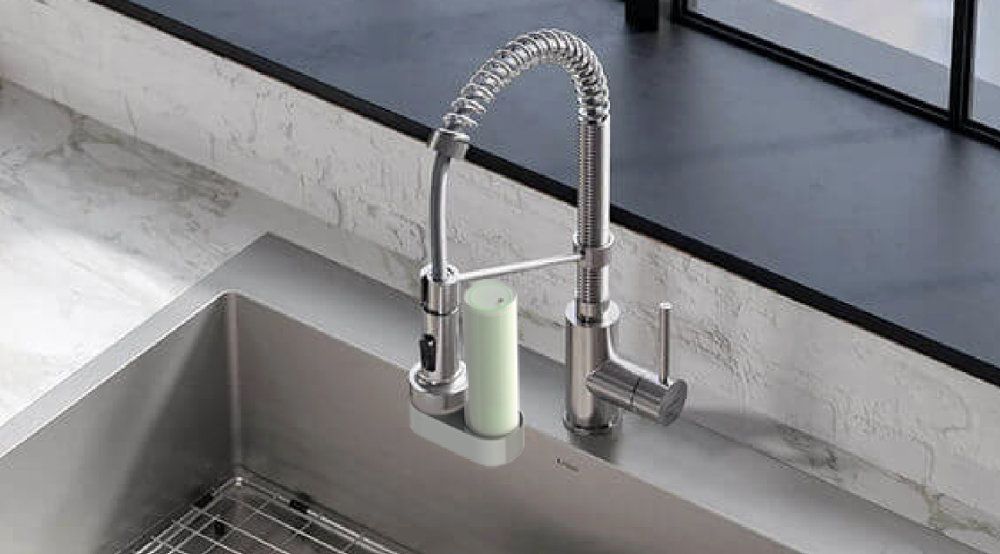
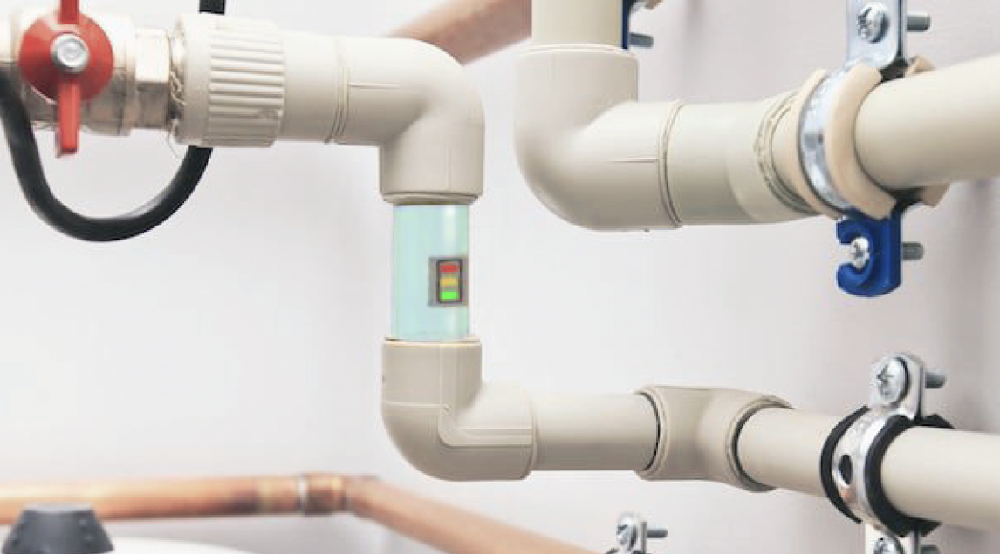

Problem Statement
Access to clean and safe drinking water is a fundamental right. As the number of natural and chemical disasters have increased, we’re seeing more contamination than ever in our waterways-- in the United States, about half of our water sources are too polluted for swimming, fishing, or drinking.
To make matters worse, the Environmental Protection Agency (EPA) and other government entities have covered up the truth about water quality in numerous contamination hotspots across the country.
Come with us to learn more about Ashland, Massachusetts-- an all too common story that hits close to home.
Role
Researcher
UI/UX Designer
Research
Tools
Different Areas of Water Contamination Incidences
Ashland, MA
Between 1965 and 1978, Nyanza Inc and other companies manufactured textile dyes, leading to large quantities of industrial waste and contamination of soil, ground water, and wetlands with mercury, chromium, arsenic, lead and more.
Effort to clean up the damage caused to the local water and other sources is still being conducted under the Environmental Protection Agency (EPA) SuperFund program.
Kevin, only 26 years old, had died from one of the rare cancers that locals were being diagnosed with. It wasn’t until after 8 years of begging for government involvement that the Environmental Protection Agency (EPA) finally conducted a study that proved in the end that the Nyanza company had been the cause.
Comparison of Existing Products
Competitive Analysis
Key Findings
Three Usercases
Emergency: Drone
User
Emergency Workers
Design Principles
Consumer: Faucet
User
People concerned with water quality
Design Principles
Future: Pipe Integration
User
Everyone (part of building code)
Design Principles
Creative Direction
Performance
Aesthetics
Soul
Prototype